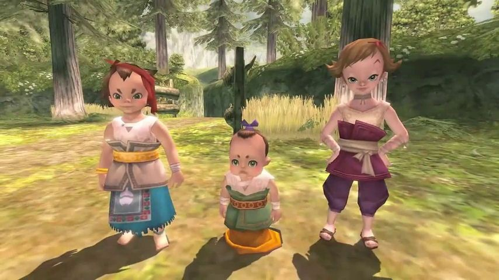

Let's Talk About Twilight Princess!

A game that deserves an escape from the shadows of its predecessors
15/07/2026
It has taken me… probably 15 years to finish The Legend of Zelda: Twilight Princess. When I first played it, I got to the first tears collecting segment as a wolf, got stuck, and gave up. Was that maybe, slightly premature? A little. Usually with Zelda games I’d play for at least a few dungeons before getting stuck and giving up. But I just never vibed with Twilight Princess, and it was only this year that I felt like giving it another shake.
Twilight Princess is a truly bizarre game. It’s indecisive, incohesive, a game that throws constant curveballs of variety and simultaneously subverts expectations whilst consistently walking exactly in line with them. In a series of timeless classics, Twilight Princess ultimately feels so distinctly of the time; both in following mid 2000s cultural trends, and in its rejection of its predecessor Wind Waker. And I just kind of want to talk about it!
PICK A STRUGGLE, YOU CAN’T STRUGGLE AT EVERYTHING
Twilight Princess wants it all. It is that friend who can’t decide when they get the menu, so they decide to order one of each, and proceed to make themselves sick. Nothing exemplifies this more than the literal first moment of gameplay - in which the player is not getting their bearings of the controls of Link, but instead herding goats on horseback. Which you do exactly twice, and then it’s never mandatory again.
Now, it could be said that this is merely setting up a major difference between this game and previous; the emphasis on horsing around. Which I would agree with… if horseplay was actually a major component of this game. But it isn’t really. There’s maybe three cinematic segments where you ride horseback, and each time the game makes a really big deal out of it. But it doesn’t commit to it with the whole structure of the game, in fact it diminishes the importance of riding horseback by letting you warp between location to location.
The game is full of this. Small, disconnected moments that feel largely irrelevant to an overarching gameplay theme. Whether it’s fishing, or sumo wrestling, or StarFox segments on a bird; Twilight Princess never settles. To open a temple door, you’ll need to do a statue hopping logic puzzle that feels like Professor Layton. To get to a temple in the first place, you’ll need to collect tears scattered around an open area as if it’s Banjo Kazooie.
This is an ideology that follows even the moment to moment gameplay as Link. Twilight Princess rejects what I consider to be a core pillar of the Zelda series - the progression of items. In previous games, it felt like you were amassing a large toolbelt of different solutions, which would inherently lead to more and more intricate levels in a very natural progression of difficulty. In Twilight Princess, everything feels a lot more insular. You barely use previously collected items in subsequent dungeons, aside from a few core ones like the Bow or Double Clawshot. Instead, items feel like they are to orchestrate a single exciting set-piece. The Spinner is an awesome item that leads to a grand boss fight… and is practically never used again. The same can be said about the Ball and Chain: it’s such a cool moment to pick it up from the boss that drops it and use it to smash ice… but when did I use it again after that? The Slingshot gets used… maybe 3 times in the whole game? And the Gale Boomerang is only slightly better.
The most literal version of this effect is the Dominion Rod, which is literally only designed for use in the Temple of Time and the subsequent, clearly indicated puzzle segment afterwards. It’s a very insular design process. I’d describe it as a game jam type of design philosophy - a collection of ideas built around a shared structure, but without any individual overlap. It’s a level-based structure, which is perfectly fine and does work for so many games… but it’s very contrary to the rest of the series. It’s a TV show masquerading as a movie, like an OVA that’s clearly several episodes of the anime mashed up into one. Some of those episodes are amazing, and some… kinda suck. But as a whole, it’s all very insular, and plays in stark contrast to its predecessor.
LET’S TALK ABOUT WIND WAKER, ACTUALLY
One of the most interesting things to me about Twilight Princess is how it is so determined, by design or by accident, to be the yang to Wind Waker’s yin. Now, my comments on Wind Waker are clouded by a haze of roughly 10 years, so if I say anything wrong about it content-wise I apologise in advance; but I can certainly tell you how Wind Waker made me feel, as that feeling is strong and has lingered with me for a decade now.
Wind Waker is a game with a very clear, core thematic message, which I’d boil down to two phrases: “Little guys can overcome huge obstacles” and “Leave the past behind.” And every single thing in Wind Waker feels like it cohesively anchors (eh?) the entire game to those ideals.
Link in Wind Waker is just a little guy. He’s not a badass hero of time, he’s a kid from a humble island beginning in a vast, vast ocean. The world needs to be huge so we can really feel the size contrast. And at first, that sailing is awesome. Sure, it’s just a jazzed up loading screen, but it’s really well done. And because we want to keep sailing as a cohesive part of the whole experience, let’s integrate it into the main progression a lot. You get upgrades by sailing the sea, you upgrade your boat, you even take your boat into one of the dungeons!
But… because we need to overcome the vast world - it’s mandatory for us to salvage everything, hence the long-drawn out Triforce Quest where the player has to slog through the whole world fishing up charts and chests. It’s not enough for the sea to be just a big set-piece: it must be an obstacle, and it must be overcome. …Slowly and tediously.
Dungeons in Wind Waker have a much clearer progression than in Twilight Princess. Each item you get stays useful for the rest of the game, and feel like much stronger expansions to Link’s moveset. I love gliding with the Deku Leaf, and it’s inherently always useful because you always keep moving from platform to platform. But I’ve always said that Wind Waker gets progressively worse with the later dungeons, and it’s largely because it tries to keep everything integrated. Those last two dungeons are a slog, because you constantly need to keep playing the Wind Waker so you can team up with two little guys, because those little guys really need to overcome some big things.
The entire aesthetic of the game, the gorgeous cell shaded artstyle, feels like it was a direct contrast to the previous games. Wind Waker wants to kill the past and forge boldly into a new world. The fact that the old Hyrule from Ocarina of Time is buried 10,000 leagues under the sea is the perfect example of that, but it bears true in every aspect of the game. This game does not want to be like Ocarina of Time.
LET’S TALK ABOUT OCARINA OF TIME, ACTUALLY
Both Twilight Princess and Wind Waker feel directly designed within the cultural context of Ocarina of Time. And how could they not? It’s Ocarina of Time, only the… most critically acclaimed video game of all time? And I’ve talked about Wind Waker wanting to bury it, but Twilight Princess often gets flack for consistently putting it on a pedestal.
People often joke about Twilight Princess being very derivative of Ocarina of Time, and I can see it - there’s some very clear homages, particularly regarding the Temple of Time and Ganondorf’s inclusion. Even the human/wolf split can be read as a parallel to the child/adult split in Ocarina. It clearly reveres Ocarina of Time, but in all of its references, it always very clearly wants to break free of it. To me, it reads as a little weighed down by the legacy of Ocarina. Wind Waker was panned when it came out for not being Ocarina of Time 2, so Twilight Princess clearly had the pressure to be that; to be Ocarina of Time 2. And frankly, no game is living up to that legacy. Games are a culture war where art is thrown to the wolves (heh) and chewed up for every little flaw. Too similar to Ocarina? You lose. Too different? You lose… but you win in the long run. And Wind Waker seems to have won in the long run. And it’s quite telling that 3D Zelda didn’t really have another smash hit until it completely broke the trend and did something completely new with Breath of the Wild.
It’s been even longer since I played Ocarina of Time, but I would describe it as a very consistent experience. It’s such a touchpoint of gaming that it’s hard to even talk about, but the pacing is super solid, it’s such a cumulative adventure and an impressive expansion of an already beloved series into the 3rd dimension. But Ocarina of Time does have a huge problem, and that is that… It's a solved game! Where do you go from here? What holes and flaws in Ocarina could be fixed up with a sequel? You can’t really go vertically from here, so you have to go horizontally. And oddly, for a game that started such a monolithic subseries of one of gaming’s most prolific series… it really laid the groundwork for a franchise that does not exist. 3D Zelda doesn’t feel like a clear series where each expands upon the next, it feels like 5 completely different games with some minorly shared themes and framework. (And then the Switch duology, I’m not even going to get started with those).
Ocarina of Time is consistent to a fault. And Wind Waker has such a strong stance and aesthetic, it starts so strong! …Before kinda whimpering to the end (in my opinion). Then it only makes sense that Twilight Princess starts off as a slow burn, slogging you through slow wolf sections and unrelated bullshit before really hitting it’s stride and giving you a platter of fantastic dungeons, beautifully cinematic segments, and fun! It’s no wonder that I dropped it so early into the runtime when I first played it, because that first bit is the worst, and it only gets better from there. It’s so intrinsically yin and yang to Wind Waker that it has to feel that in the pacing too, even if unintentional or not. And I find that kind of fascinating.
The last thing I will say is that Wind Waker and Twilight Princess do unify on a single point - and that is their end. Both of these games have spectacular climaxes, amazing final bosses and really beautiful endings. For Wind Waker, it’s the climax that brings me back on board after that sophomore slump of a second half, and for Twilight Princess it’s the climax that really cinches the game’s upward trajectory and makes you forget even about whatever goat herding nonsense you were doing in the first half.
Which do I prefer? Uh… I don’t know. Even in the course of writing this article, I’ve fluctuated between preferring all three. Consistent, cohesive and insular… all three kind of average out to the same score. Maybe that new Ocarina of Time remake will give me a more definitive answer, or maybe I’ll play Wind Waker again as an adult and not totally hate that triforce hunt or the last two dungeons. For right now, you might just find me leaning on the side of Twilight Princess, but that could just be recency bias.
Link’s Crossbow Training clears them all though!